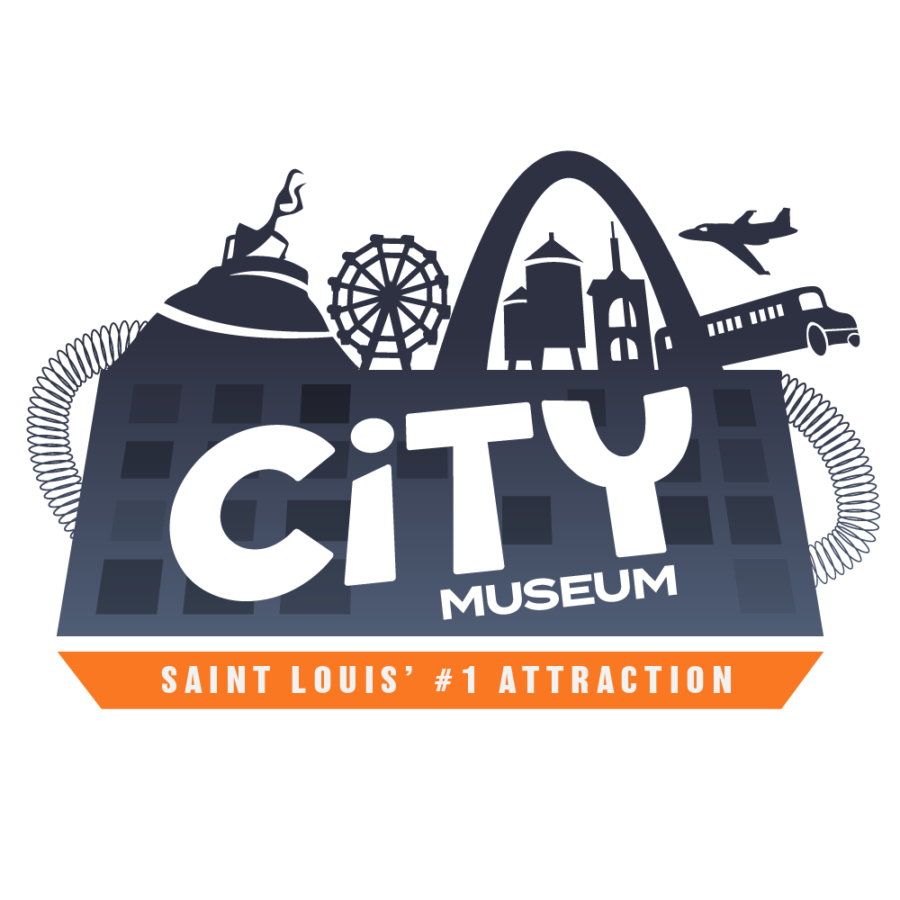

{kind=link}


The City Museum, an urban playground that many consider a St. Louis staple, has had the same logo for quite a long time. For one of my graphic design classes, I selected the attraction for a brand redesign project.
My goals were: (1) To retain the same fun and unique character to the current Logo (2) To make the brand more professional and modern (3) Improve on merchandise opportunities.
I accomplished these goals by incorporating some of the vibrant and iconic features of the City Museum building into the logo, therefore retaining the quirk of the original logo while making the icon more recognizable. I also chose a navy and orange color scheme to represent the urban origins of the attraction and the rugged freedom the location offers.
The main logo, which shows the iconic silhouette of the main building.
The professional / business logo for use within the company.

Two business card options, one with the professional logo and one with the main logo.
A T-shirt sample that could be sold in the gift shop and online.
I had to create many logo ideas before reaching this goal. Here you can see some of my other ideas towards the start.